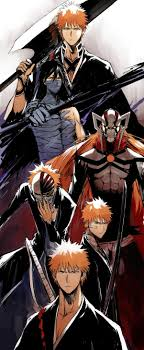

Naruto

This much is obvious there's no mentioning anime without naruto. This was my first and best anime and if given the time will definitely rewatch it. From the protagonists to even to the antagonists this anime is just perfect. the one anime that you even get to love some of the villians more than the protagonists. Now to read a little about why i think Naruto is the best anime and in a bid to concince you to watch it here to read up. Similar links will be posted in the other animes to see why they are so good.

Now this is that anime that if not for the numerous spoilers it got it would have just been perfect. Kurosaki ichigo the human thats a shinigami also has hollow power and quincy powers like how over powered can someone get. But well he wasnt even the strongest in the verse but this is a really good anime. Done even get me started on the wide variety of characters and personalities they have from Aizen to kisuke the arrancars, espadas its just so much. Read up here and as you read up you will also see them mention the fact that the fillers made the anime look bad but even with that it was still a great anime


I mean cmon you knew it was going to be here this anime was epic. shame they didnt see it to the end. this anime is so unique from nen to unique characters to relatable villian. just read up for yourself.


Talk about mad visuals fighting styles and a relatable ending. Read up
Theres a whole lot to say here is it from cursed techiques to cursed energies or special grade curses and sorcerers theres a whole lot but then come on GOJO SATORU!!! x SUKUNA!!!. just read up alright
Eren Jeagur TATAKAYE! Every Jujutsu Kaisen fan understands this one thing. Mass Genocide and a great story-telling and amazing plot twists. Read up
SENKUUUUUUUUUUU
That one anime that is not all about fighting and powers but the brains
i simply have mo words for this right here its just so epic. the anime is just 12 episodes which didnt even scratch the surface but if you move to the manga.. let me just leave it here.